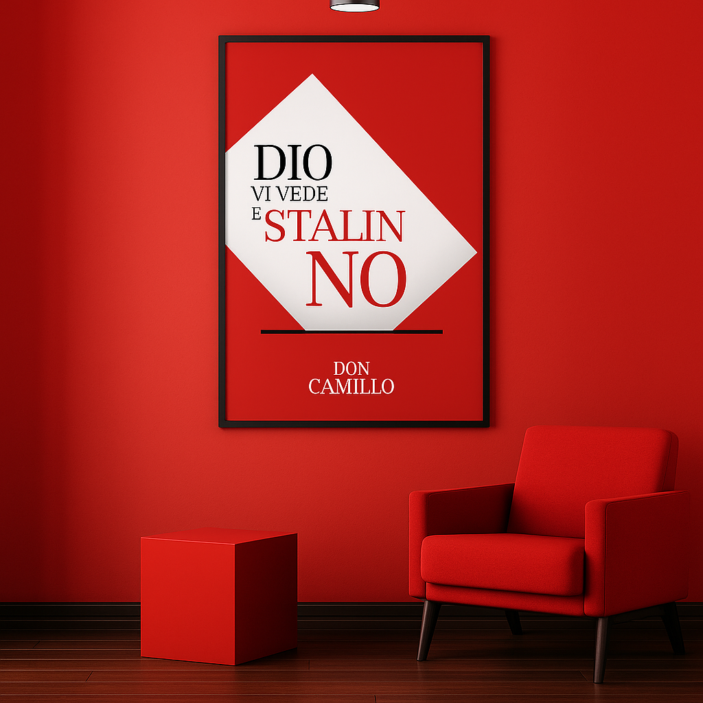
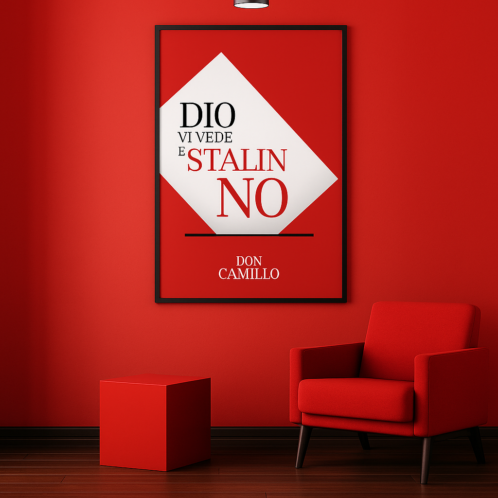

SHOP
 

RATIONALE
The Don Camillo poster reinterprets the iconic phrase “Dio vi vede e Stalin no” by translating its cultural and political tension into a clean, contemporary graphic composition. At the center of the design lies a white diamond that is not merely a geometric device, but a direct reference to an Italian ballot paper. This subtle yet intentional symbolism reconnects the poster to its historical roots in civic participation, ideological conflict, and everyday political discourse.
By framing the text within the silhouette of a ballot, the poster transforms a familiar object of democratic ritual into a visual stage for the message. The red background amplifies the ideological friction embedded in the phrase, while the typographic hierarchy guides the viewer through its rhythm—divine oversight contrasted with human power structures. Serif typography is used to evoke a sense of tradition and gravity, reinforcing the cultural weight carried by the original expression.
The overall composition is intentionally minimal: no imagery, no ornaments, only form, color, and text. This restraint allows the concept itself to emerge with clarity. The poster becomes not just a decorative piece, but a distillation of Italian mid-century political culture—sharp, memorable, and symbolically loaded.
Designed to be both visually striking and conceptually grounded, the poster elevates a historical slogan into a contemporary graphic artifact, preserving its irony, tension, and cultural identity while presenting it through a refined, modern lens.
INFO
Poster size: 35x50 cm or 50x70 cm
Fonts: -
Paper:-
ABOUT THE SHOP
This shop features a curated selection of design projects created by me and my collaborators. Each item reflects our passion for graphic design and our commitment to quality and creativity.
All posters are printed on high-quality paper in Milan to ensure vibrant colors and durability.
Please note that we ship only within Italy at the moment. For any inquiries, feel free to contact me directly through the contact section.
Transactions are secured by Stripe, ensuring a safe and smooth payment process.